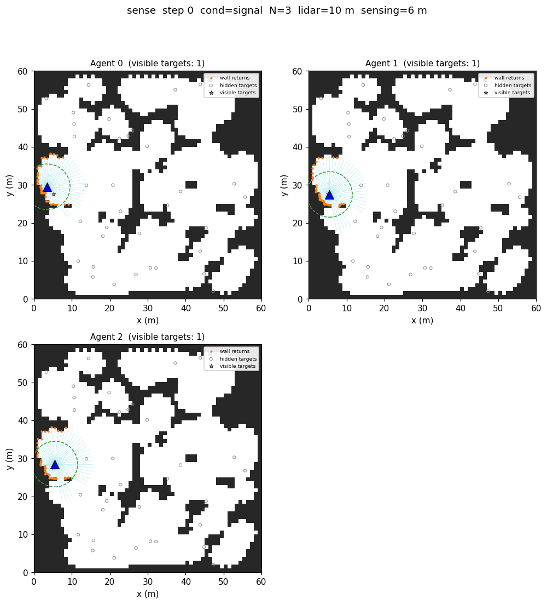
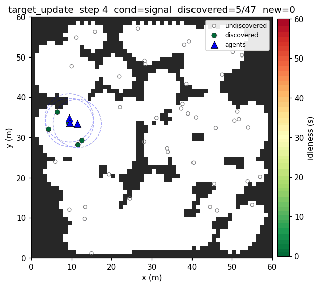
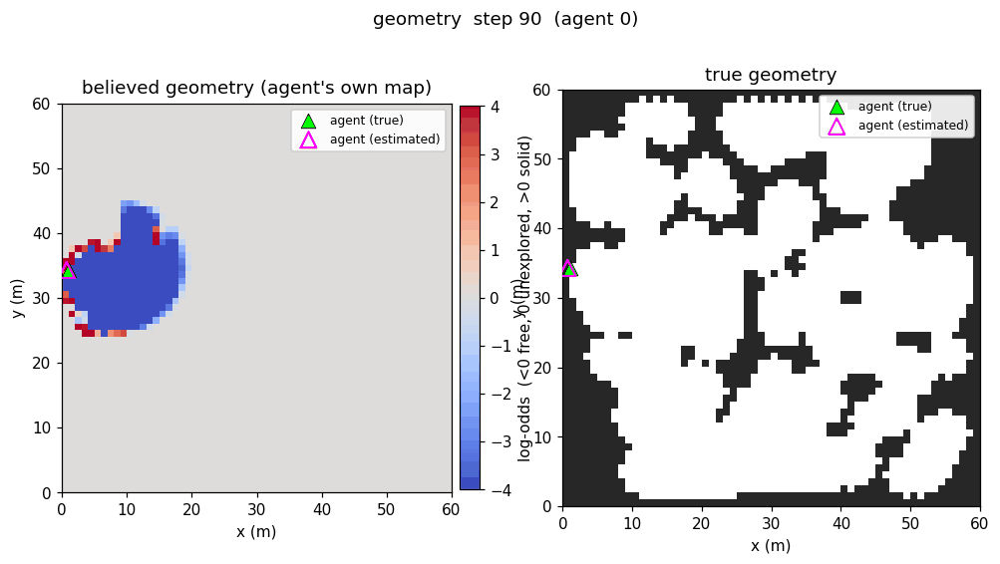
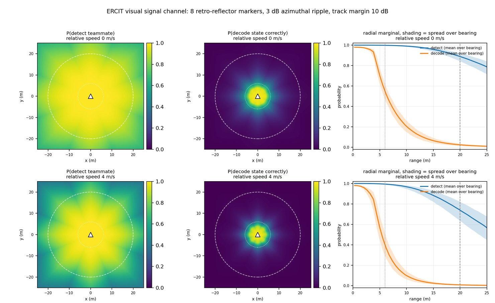

Embodied LiDAR Signaling for RF-Silent Multi-Robot Persistent Search and Revisit
In mass-casualty and search-and-rescue incidents, triage is time constrained and happens in dangerous, occluded places. Robots are well suited to survey them ahead of responders, but only if they deploy without infrastructure and keep working when communications are denied.
This thesis focuses on how a team of LiDAR-equipped aerial robots can search a GPS- and radio-denied area for casualties and keep revisiting them to monitor their condition, coordinating through a physical signaling channel rather than radio, which removes the RF signature that enables geolocation. The research is centered on whether a decentralized, model-based learner can exploit a coordination signal that is sparse, short-range and frequently wrong. The signals and their detection are modeled using detection theory with the aim of being physically accurate, but not precise.

This agent coordination problem was inspired by my work during the DARPA Triage Challenge, where setup was only allocated 20 minutes, required numerous cables and computers, and was prone to failure and gaps in communication. An autonomous drone could identify patient locations but lacked the ability to communicate them, interfering with our drones’ ability to coordinate with teaming robots. The communication infrastructure was time consuming, profoundly affected our UAV and UGV coordination and performance, and at times negated our autonomy during outages.
The environment places N robots in a bounded, obstructed arena holding M casualties, M far greater than N, in grouped but initially unknown locations. At that ratio the team has to divide revisit responsibility rather than sweep together.

Agents have no GPS or any other correction on their true pose, never share maps, and each builds its own, subject to drift. A discovery stays private unless another agent is close enough to read the signal.

The signal the training environment models is a switched retro-reflective band. “Blinking” at a fixed rate, it encodes a small discrete vocabulary into the LiDAR returns that can be decoded by teammates using Fourier analysis. The vocabulary is deterministic: a found-here beacon fires on discovering casualties no one has logged, an observing beacon on refreshing one that had gone stale. How well the channel carries is set by a detection model: an expected-SNR law determines the range and accuracy.

The learner is a multi-agent deep reinforcement learning framework built on a DreamerV3-style Recurrent State-Space Model, trained to move and to infer each observable teammate’s intent from how it sees them act. I chose a model-based algorithm because encounters between robots are sparse, because the information it receives is environment-dependent and imperfect, and because its probabilistic latent can hold both an agent’s own localization and its teammates’ intents.
The aim is to measure how the signaling can affect teaming behavior. How much of the gap between a scripted patrol and an agent given perfect knowledge of the arena does a sparse, unreliable signal close? How much of that comes from the world model’s prediction of its teammates rather than from the signal alone? And how much of it survives when detection degrades, the geometry is unfamiliar, or the team is a size the agents never trained on?